Ansatz Catalogue¶
This page lists every ansatz in mpstab.models.ansatze. For each one it
gives the physical system or algorithm the circuit models, what the circuit
does, and which parameters set its two resources:
magic: how far the circuit is from a Clifford circuit, i.e. how many magic gates HSMPO keeps and how large their angles are. It sets the cost of the tensor-network part of HSMPO.
entanglement: which qubits interact and for how long, i.e. how fast the bond dimension of the state can grow.
The same information is available in code. Every ansatz class has two tuples,
magic_parameters and entanglement_parameters, with the names of the
constructor fields that act as magic and entanglement knobs:
from mpstab.models.ansatze import RampedKickedIsing
RampedKickedIsing.magic_parameters
# ('delta_h', 'delta_j', 'delta_z', 'delta_h_last', 'delta_z_last', 'disorder')
RampedKickedIsing.entanglement_parameters
# ('n_steps', 'clifford_h', 'clifford_j', 'bond_density')
A field may be in both lists. A generic rotation angle makes a magic gate and,
through the couplings, also changes the entangling power. The
ParametricKickedIsing family is built so that
the two groups of knobs are separate.
Each section shows a short piece of the circuit the class builds, on a few
qubits and for one step or layer. Clifford gates are yellow and magic gates
blue; CNOT, CZ and SWAP have their usual symbols. Brackets above the wires
mark the parts of the circuit, and angles set by a constructor field carry the
field’s symbol (the colour legend is under the first figure). The figures are
drawn by docs/scripts/draw_ansatze.py.
Summary¶
Ansatz |
Physical picture |
Magic knobs |
Entanglement knobs |
|---|---|---|---|
|
Generic variational circuit |
|
|
|
Brickwork variational circuit |
|
|
|
Particle-number-conserving circuit |
|
|
|
Floquet echo of a kicked chain |
|
|
|
Kicked Ising chain |
|
|
|
Kicked Ising chain near a Clifford point |
|
|
|
Kicked Ising chain with a time-dependent drive |
as above, plus |
as above, plus |
|
Kicked central-spin model |
as |
as |
|
Transverse-field Ising time evolution |
|
|
|
Quantum Fourier transform |
none (fixed) |
none (fixed) |
|
QFT followed by a phase kernel |
|
none (fixed) |
|
Grover search |
none (fixed) |
|
|
Quantum phase estimation |
|
|
|
Quantum amplitude estimation |
|
|
|
Any user circuit |
set by the circuit |
set by the circuit |
nqubits scales both resources for every ansatz and is not listed.
Class hierarchy¶
Ansatz
├── HardwareEfficient
├── HardwareEfficientBrickwork
├── HammingWeightPreserving
├── FloquetAnsatz
├── CircuitAnsatz
├── _KickedIsingBase step loop: kicks, then couplings layer by layer
│ ├── KickedIsing whole angles as gates
│ └── ParametricKickedIsing Clifford angle + deviation
│ └── RampedKickedIsing deviations ramped over the steps, disorder, dilution
│ └── StarKickedIsing hub-leaf couplings instead of a chain
└── _CompiledAnsatz build a high-level circuit, transpile it
├── TranspiledAnsatz
├── QFT, QFTPhaseKernel
├── Grover, QPE, QAE
└── TrotterIsing
The kicked Ising ansätze share the loop of _KickedIsingBase. A subclass
only says how a qubit is kicked (_kick), how a bond is coupled
(_coupling), which bonds exist (_coupling_layers) and whether a bond
is kept (_keep_bond). For example, StarKickedIsing only overrides
_coupling_layers. The circuit-library ansätze share _CompiledAnsatz:
they only implement _build_circuit, and the transpilation to native gates
is done once in the base class.
Variational circuits¶
HardwareEfficient¶
The standard ansatz of variational algorithms on NISQ devices. Each of the
nlayers layers applies an RY rotation to every qubit, then a ring of
CZ gates between neighbours (q, q+1 mod n). The angles are drawn
uniformly in \([-\pi, \pi)\) from numpy’s global generator, so a generic
rotation is a magic gate. There are nqubits * nlayers magic gates, which
nlayers sets. With entangling=False the circuit makes a product state.
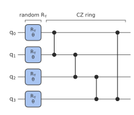
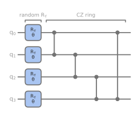
HardwareEfficient(nqubits=4, nlayers=1): one layer.¶
HardwareEfficientBrickwork¶
A denser variational circuit. Each layer has two sublayers of random RY and
RZ rotations. The first is followed by CZ gates on the even bonds, the
second by CZ gates on the odd bonds plus a CZ(0, n-1) that closes the
ring and creates long-range entanglement. A final layer of RY rotations
ends the circuit. nlayers sets both the number of random rotations (magic)
and the depth of the brickwork (entanglement).
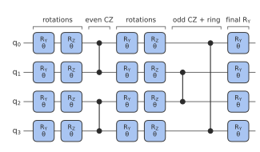
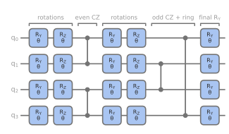
HardwareEfficientBrickwork(nqubits=4, nlayers=1): the whole circuit.¶
HammingWeightPreserving¶
A particle-number-conserving circuit, as used for fermionic systems in quantum
chemistry. It starts from the half-filling state
\(|1\dots10\dots0\rangle\). Each layer then applies reconfigurable beam
splitter (RBS) gates, Givens rotations in the \(\{|01\rangle, |10\rangle\}\)
subspace of a pair, between nearest and next-nearest neighbours on a ring.
Every RBS is decomposed into CNOT gates and two RY rotations of random
angle \(\pm\theta\), the magic gates. The state stays in the
sector with Hamming weight nqubits // 2. nqubits must be even.
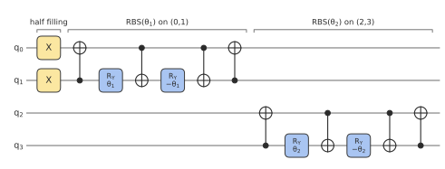
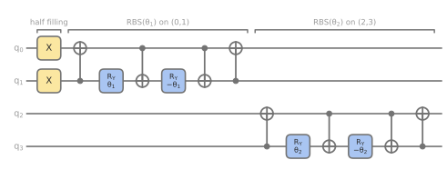
HammingWeightPreserving(nqubits=4): the half-filling state and the
first two RBS gates of the layer.¶
Floquet and kicked dynamics¶
FloquetAnsatz¶
A Floquet echo, the circuit of a Loschmidt-echo or out-of-time-order experiment:
where \(F\) is one Floquet layer of a kicked chain: on each bond,
\(R_Z(\pi/4)\) and \(R_X(b)\) on both qubits, then
\(R_{ZZ}(\pi/2)\), first on the even bonds and then on the odd ones. The
perturbation \(R_Z(\theta)\) on target_qubit is the signal the echo
detects. b sets the magic of the kicks (Clifford when it is a multiple of
\(\pi/2\)) and also how much the dynamics spreads correlations. theta
adds one magic gate. nlayers sets how far the forward evolution spreads
the perturbation before the echo refocuses it. The \(R_Z(\pi/4)\) gates are
fixed \(T\) gates, so the circuit holds some magic at every b.
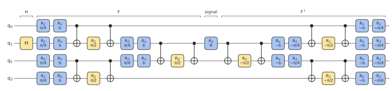
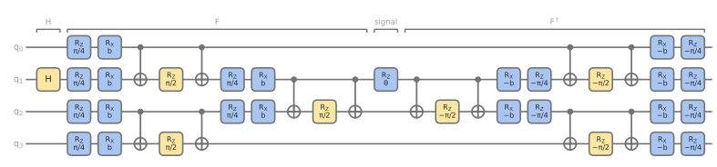
FloquetAnsatz(nqubits=4, nlayers=1, target_qubit=1): the whole echo.
The fixed \(R_Z(\pi/4)\) gates are magic at every b.¶
KickedIsing¶
The kicked Ising chain, a periodically driven Ising model. It is a standard model of quantum chaos, integrable at some angles and dual-unitary at the self-dual point. Each step is one period of the drive,
with the couplings applied on the even bonds, then on the odd bonds of an open
chain. Every coupling is written as CNOT · RZ · CNOT, the form HSMPO splits
into Clifford gates and one rotation, so no transpilation is needed. Each angle
is a single gate. It is a magic gate unless it is a multiple of \(\pi/2\),
so theta_h, theta_z and theta_j set both the magic and the
entangling power. At the default theta_j = -pi/2 the couplings are Clifford
and only the kicks are magic.
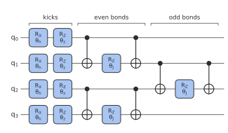
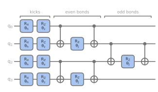
KickedIsing(nqubits=4, n_steps=1) at generic angles: each angle is one gate.¶
ParametricKickedIsing¶
The same chain, written as a Clifford circuit plus small deviations:
with \(\theta^C\) multiples of \(\pi/2\). Each rotation is added as two gates, \(R(\theta^C)\) and then \(R(\delta)\). HSMPO puts the first in the stabilizer part and keeps only the second as a magic gate. This is the ansatz in which the two resources are tuned separately:
magic:
delta_h,delta_j,delta_z. A zero deviation adds no gate. Small deviations give small magic angles.entanglement: the Clifford skeleton
clifford_h,clifford_jandn_steps. The default \(\theta_h^C = \pi/2\), \(\theta_J^C = -\pi/2\) is the self-dual point, where the entanglement grows at the maximal speed. Atclifford_j = 0the qubits never interact.
The deviations change the entanglement only perturbatively.
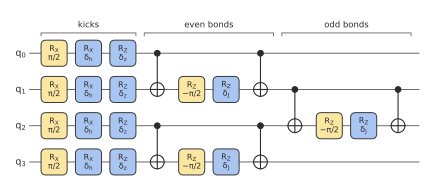
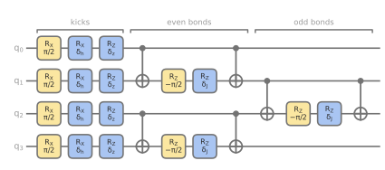
ParametricKickedIsing(nqubits=4, n_steps=1) with all three deviations
non-zero: each rotation is a yellow Clifford gate followed by a blue deviation.¶
RampedKickedIsing¶
A kicked Ising chain whose drive changes over time. The transverse deviation
goes from delta_h at the first step to delta_h_last at the last one,
geometrically when both have the same sign and linearly otherwise. The
longitudinal one goes from delta_z to delta_z_last. The ramp decides
where in the circuit the magic sits. When it is concentrated in the first
steps, a head/tail cut leaves the large rotations to the head and only small
angles to the tail. The opposite ramp is a control.
Two optional sources of randomness, both reproducible through seed:
disorder(magic): every kick gets its own deviation \(\delta_h (1 + \text{disorder} \cdot u)\), \(u \in [-1, 1]\). The seeds are disorder realisations of the same magic profile.bond_density(entanglement): each coupling is kept with this probability. At \(\delta_J = 0\) the couplings are Clifford, so dilution lowers the entanglement without changing the magic.
Without a ramp, at bond_density = 1 and disorder = 0, the circuit is
exactly ParametricKickedIsing.
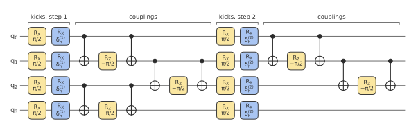
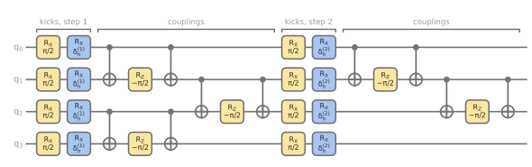
RampedKickedIsing(nqubits=4, n_steps=2, delta_h=0.4, delta_h_last=0.1,
bond_density=0.8): the deviation shrinks from step 1 to step 2, and the
coupling on bond (2, 3) of step 2 has been dropped.¶
StarKickedIsing¶
A kicked central-spin model: the kicks of RampedKickedIsing, but every
step couples the hub (qubit 0) to every leaf instead of coupling neighbours in
a chain. It is the native circuit of devices with a central element, such as
the IQM Star, where the hub’s state can stay in the resonator for a whole step.
Its knobs are those of RampedKickedIsing. bond_density thins out the
hub-leaf bonds.
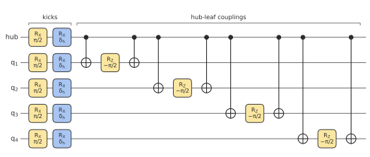
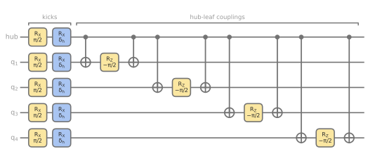
StarKickedIsing(nqubits=5, n_steps=1): every leaf is coupled to the hub.¶
TrotterIsing¶
First-order Trotter evolution under the transverse-field Ising Hamiltonian
on an open chain. Each step applies \(R_{ZZ}(-2J\,dt)\) on every bond, then
\(R_X(-2h\,dt)\) on every qubit. It is a kicked Ising chain with angles set
by a Hamiltonian, transpiled to native gates. The magic comes from the angles,
so from dt, J and h. The entangling power per step is set by
J * dt, and the total by n_steps.
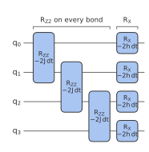
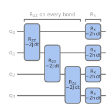
TrotterIsing(nqubits=4, n_steps=1, transpile=False): one Trotter step,
before the transpilation to native gates.¶
Circuit library¶
Textbook algorithms used as HSMPO/HQSMPO benchmarks. They are written with
high-level gates and transpiled to native gates on construction (pass
transpile=False to keep the raw circuit).
QFT: the quantum Fourier transform. The controlled phases \(\pi/2^k\) are fixed magic gates. The circuit has no knob besidesnqubits.QFTPhaseKernel: a QFT followed by oneRZper qubit with anglescoeffs. HSMPO has to propagate these magic rotations back through the QFT.coeffssets the trailing magic.Grover: Grover search formarked_state. The Toffoli gates of the oracle and the diffuser hold fixed magic.n_iterationssets the depth. The oracle is exact only up to three qubits.QPE: phase estimation of \(U = \mathrm{diag}(1, e^{2\pi i\,\phi})\) withn_countingcounting qubits.phasesets the controlled-phase angles, hence the magic.n_countingsets the size of the inverse QFT.QAE: amplitude estimation of \(a = \sin^2\theta_A\).theta_Asets the magic,n_countingthe counting register.
The figures show the raw circuits (transpile=False) on three qubits or
three counting qubits; HSMPO runs on their transpiled form.
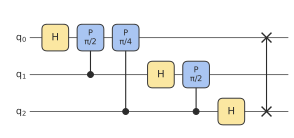
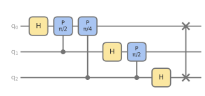
QFT(nqubits=3).¶
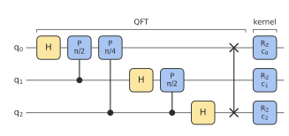
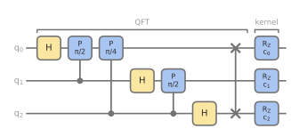
QFTPhaseKernel(nqubits=3), with the kernel angles \(c_j\).¶
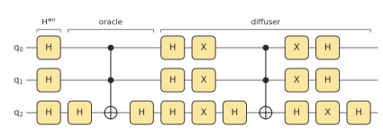
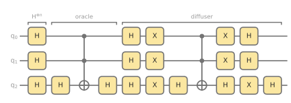
Grover(nqubits=3, n_iterations=1): the oracle marks \(|111\rangle\).¶
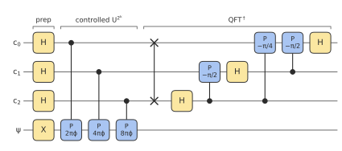
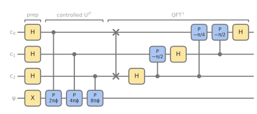
QPE(n_counting=3): three counting qubits and the eigenstate qubit.¶
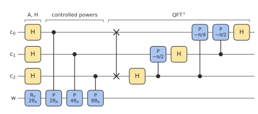
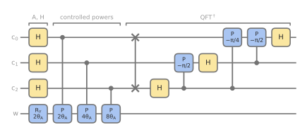
QAE(n_counting=3): three counting qubits and the work qubit.¶
Wrappers¶
CircuitAnsatzwraps any Qibo circuit unchanged.TranspiledAnsatzwraps a Qibo circuit and transpiles it tonative_gates, optionally routed on aconnectivitygraph.
For both, the magic and the entanglement are those of the circuit given.
See also¶
Using Ansätze: how to use an ansatz with HSMPO and how to write your own
Models & Methods: the API reference of
mpstab.models.ansatze